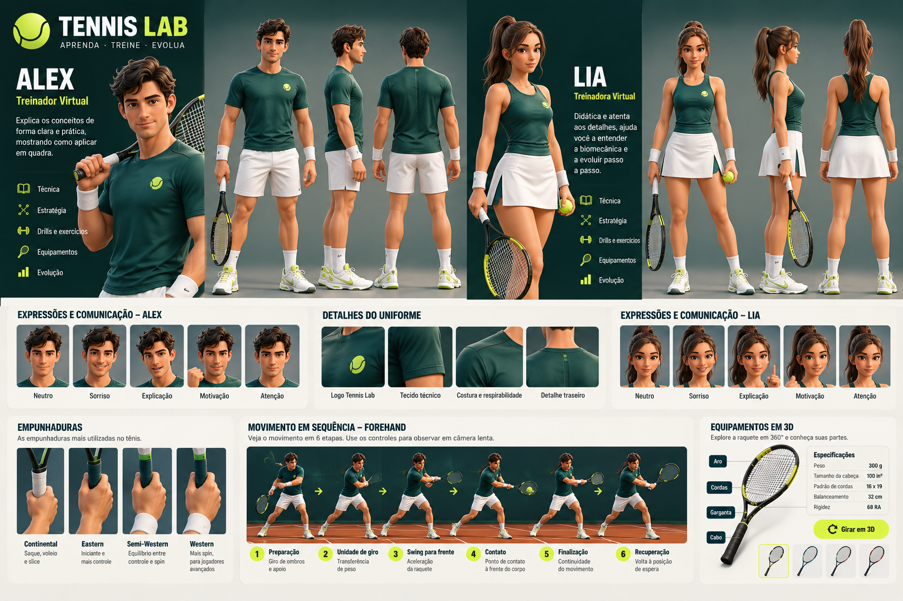

MÓDULO 01 · 7 AULAS
Descobrindo o Tênis
- A história do tênis
- O que é o tênis?
- Conhecendo as superfícies
- Estilos de jogo
- Conceitos e linguagem do tênis
- Como começar a jogar
- Sua jornada e seus objetivos
Um único lugar para o conteúdo, a identidade visual e o desenvolvimento do Tennis Lab — a plataforma que transforma o aprendizado de tênis em uma experiência divertida e visual.
Explorar o Capítulo 1 →Estrutura dos módulos, aulas e roteiro completo do primeiro capítulo.
Paleta de cores, Alex, Lia e diretrizes para a linguagem 3D.
Funcionalidades, status real, tecnologia proposta e próximas entregas.
Conceitos de arte disponíveis no projeto; não são arquivos 3D finais.
